二手集市 · 管理员商品审核、屏蔽与恢复
36 · 管理员待审核商品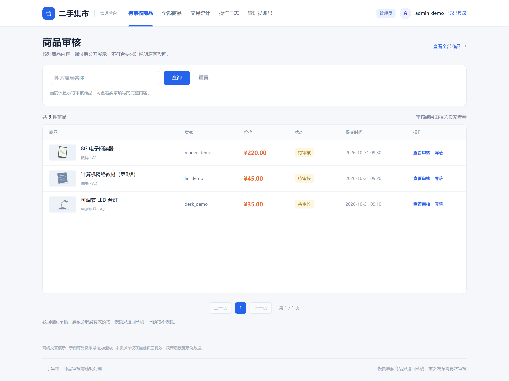
37 · 管理员全部商品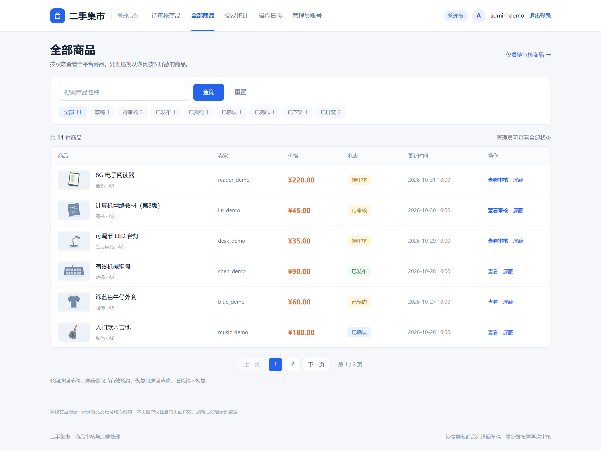
38 · 管理员商品审核详情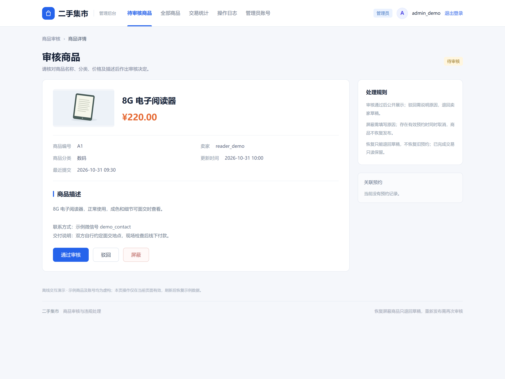
39 · 审核通过确认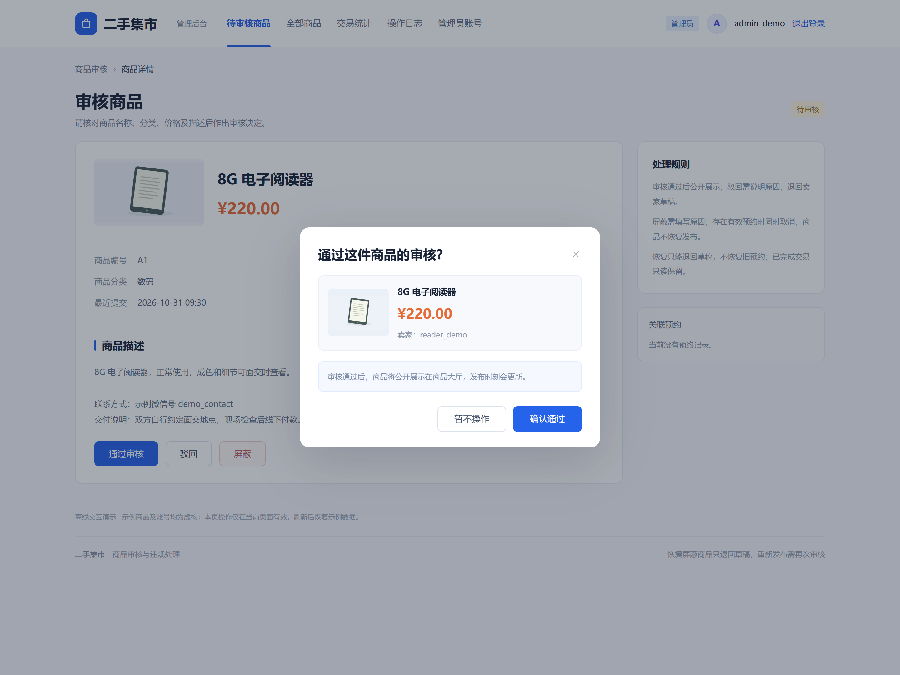
40 · 管理员驳回商品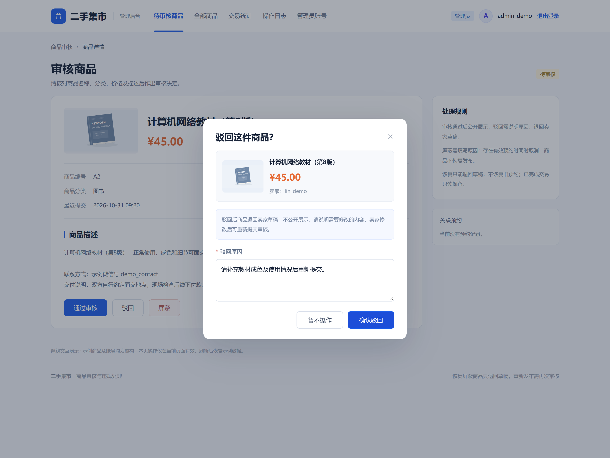
41 · 驳回原因必填提示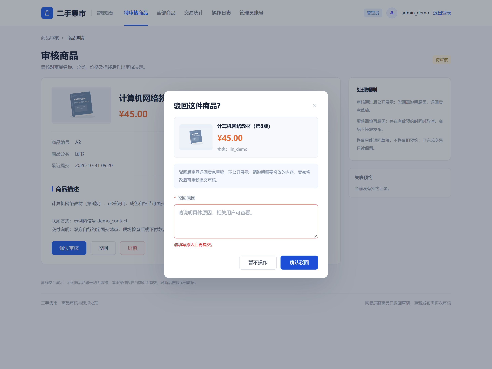
42 · 屏蔽并取消有效预约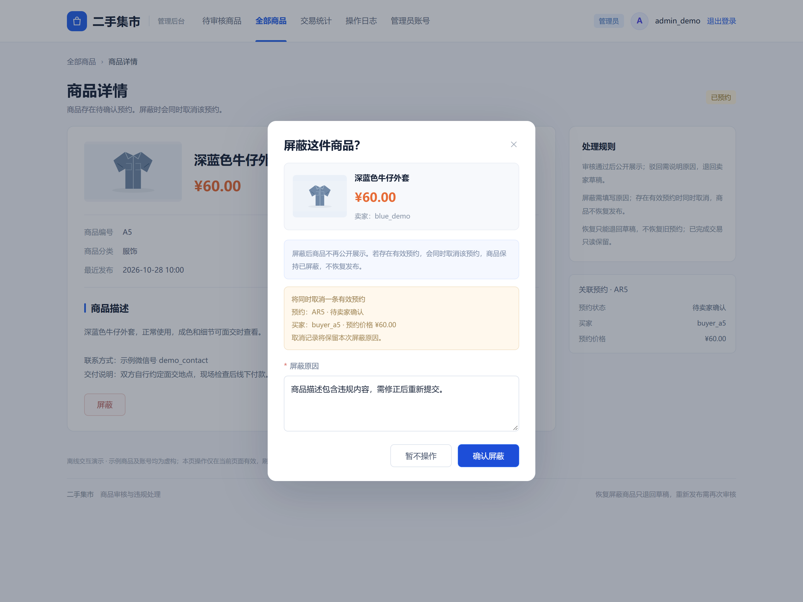
43 · 商品已屏蔽处理结果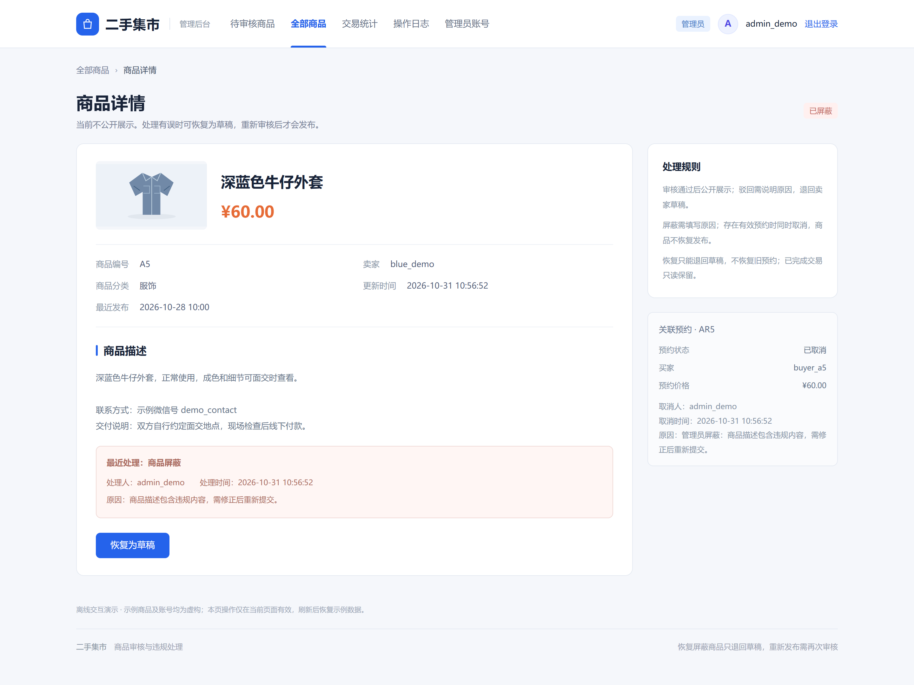
44 · 恢复屏蔽商品确认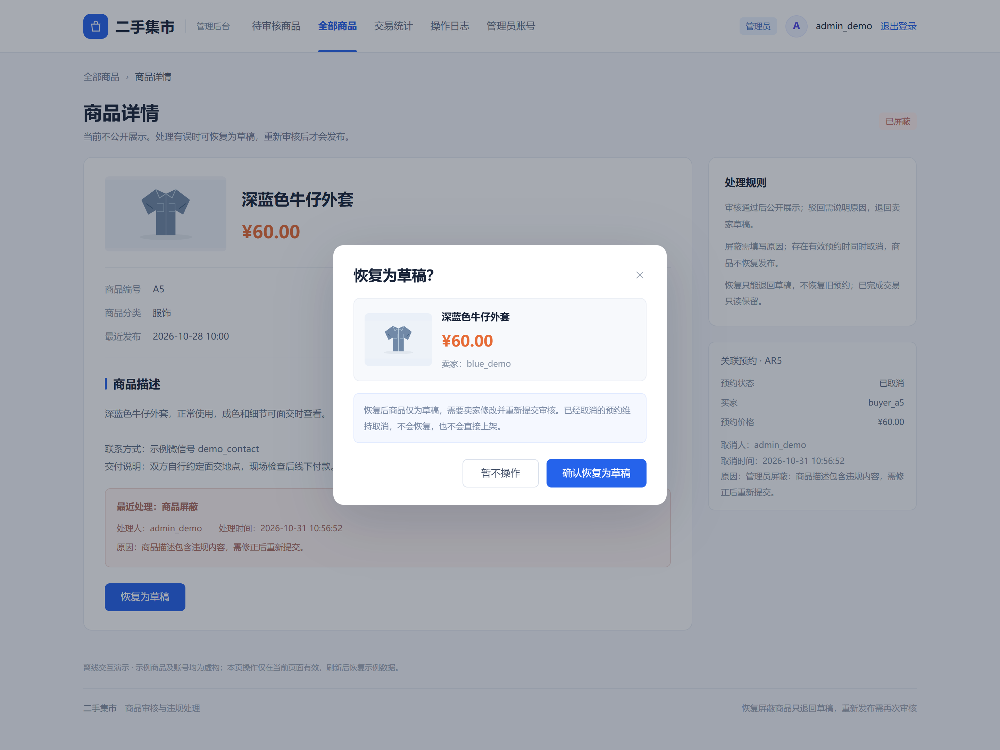
45 · 恢复后仍为草稿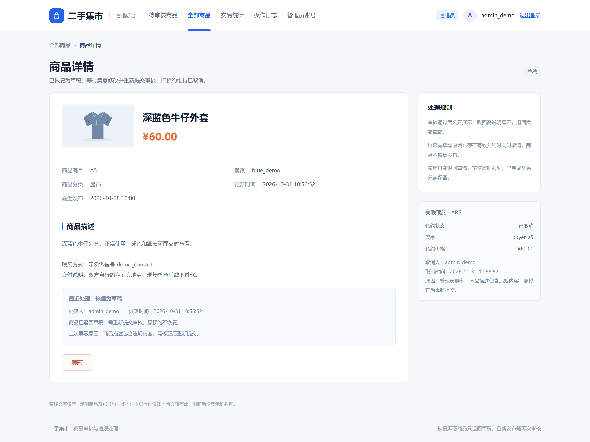
46 · 已完成商品只读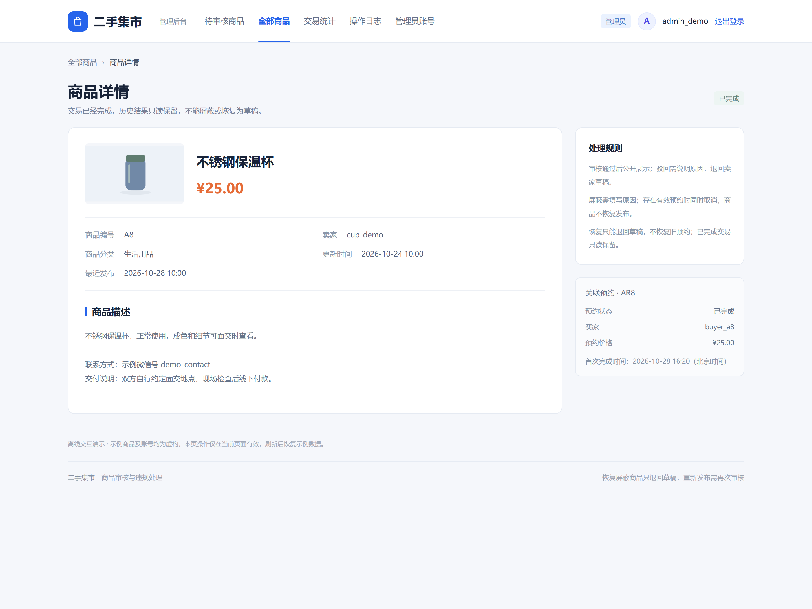
47 · 管理员查询无结果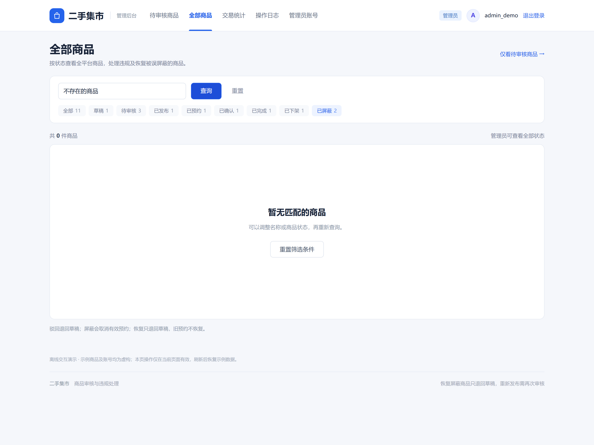
48 · 管理员旧页面操作失效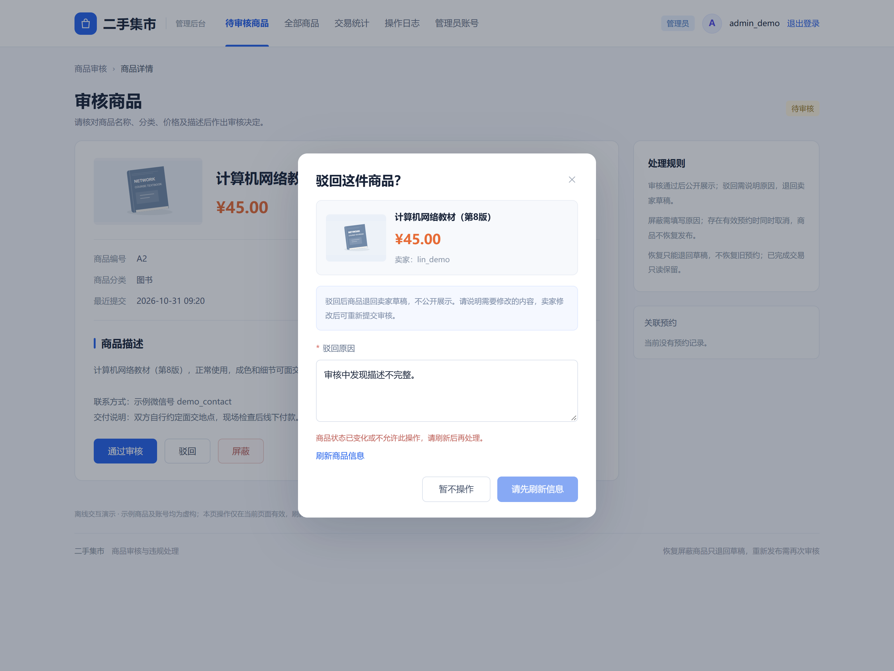